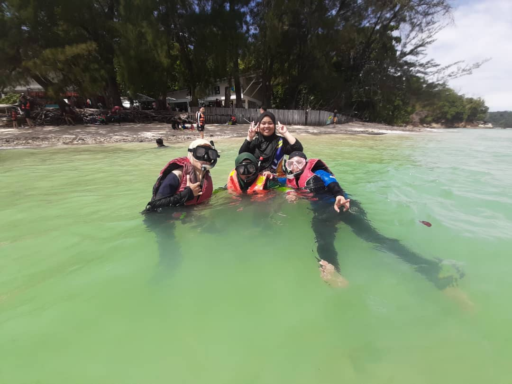
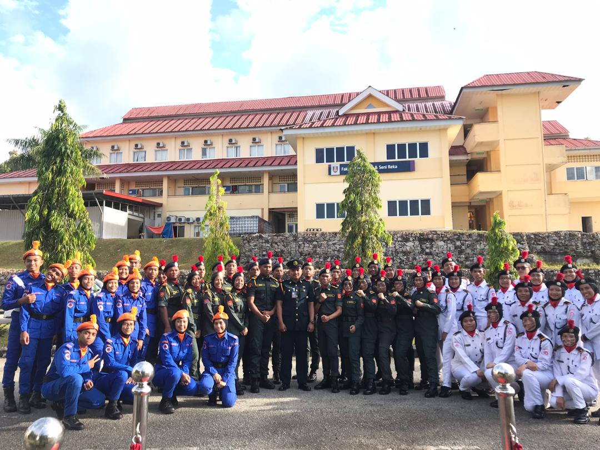
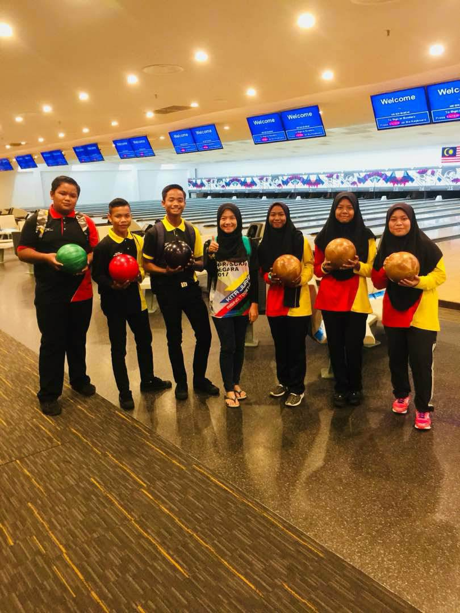
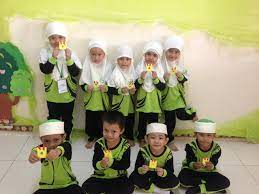
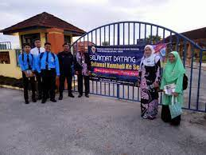
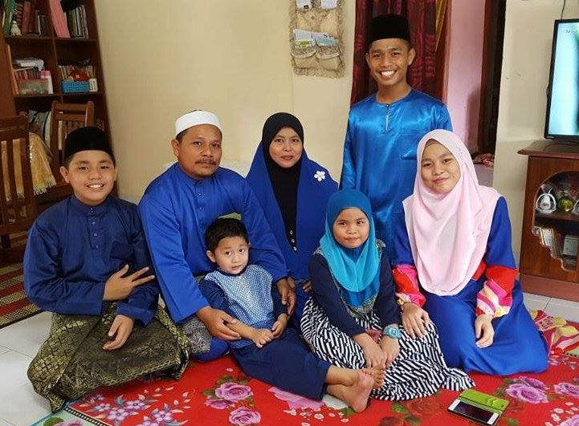
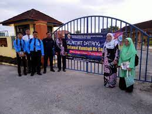
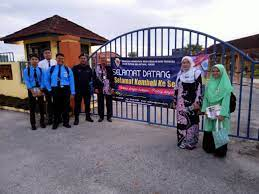
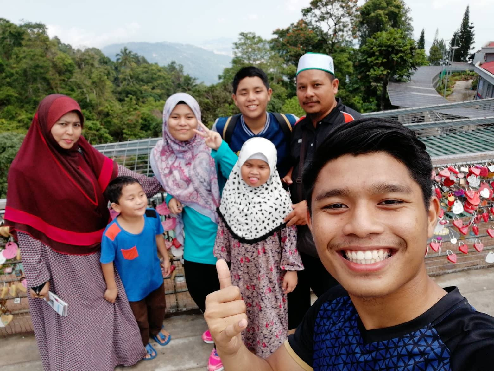
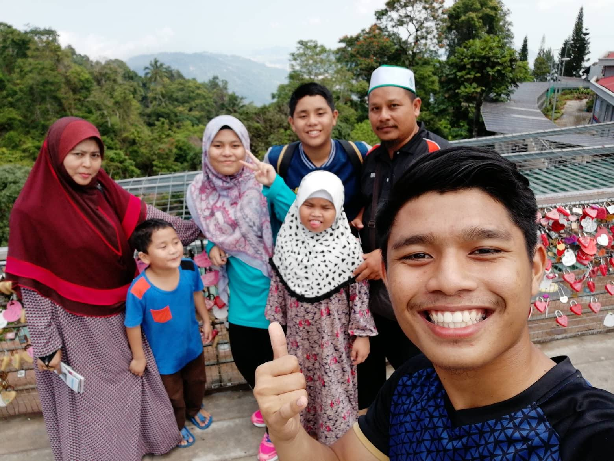

Name: Fatin Nadhirah Bt Mohd Shaharuddin. Age : 21 Years old . Date of Birth : 05 December 2001 . Place of Birth :Hospital Besar, Kuala Terengganu , Terengganu . Citizens : Malaysia . Number of siblings: 5 person / Second child . Residence : Bagan Datuk, Perak. Hobby : listen to songs, surf the internet . Nice to meet you friend . I am a person of high confidence. I am confident that I will be able to do my best in whatever task is done if executed in the right way and accompanied by hard work. In addition, prayer is also a factor in one's success. Therefore, every effort taken must be embroidered with prayer and high commitment.I like to do my tasks systematically. Therefore, I will carry out my daily activities based on the daily schedule that I have prepared. It also really helps me manage my time wisely as I always know what I need to do at certain times. Thus, I was able to avoid wasting time. Furthermore, good time management is very important to me who takes on responsibilities as a student.
EXPERIENCE



EDUCATION


My Study Place
1) TADIKA SAIDATINA AISYAH , BAGAN DATUK , PERAK .
2) SEKOLAH KEBANGSAAN TANJUNG BAYAN, HUTAN MELINTANG, PERAK .
3) SEKOLAH MENENGAH KEBANGSAAN SERI PERKASA, HUTAN MELINTANG , PERAK.
4) UITM KAMPUS MACHANG, KELANTAN.
FAMILY

About my family
Name: Fatin Nadhirah Bt Mohd Shaharuddin. Age : 21 Years old . Date of Birth : 05 December 2001 . Place of Birth :Hospital Besar, Kuala Terengganu , Terengganu . Citizens : Malaysia . Number of siblings: 5 person / Second child . Residence : Bagan Datuk, Perak. Hobby : listen to songs, surf the internet . Nice to meet you friend . I am a person of high confidence. I am confident that I will be able to do my best in whatever task is done if executed in the right way and accompanied by hard work. In addition, prayer is also a factor in one's success. Therefore, every effort taken must be embroidered with prayer and high commitment.I like to do my tasks systematically. Therefore, I will carry out my daily activities based on the daily schedule that I have prepared. It also really helps me manage my time wisely as I always know what I need to do at certain times. Thus, I was able to avoid wasting time. Furthermore, good time management is very important to me who takes on responsibilities as a student.

 

 
